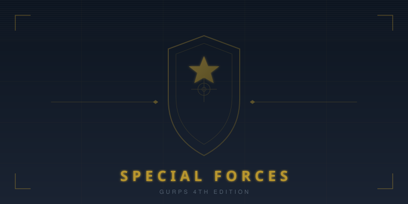
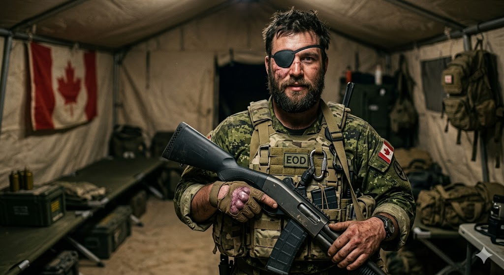
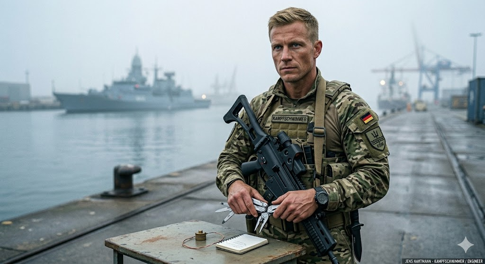
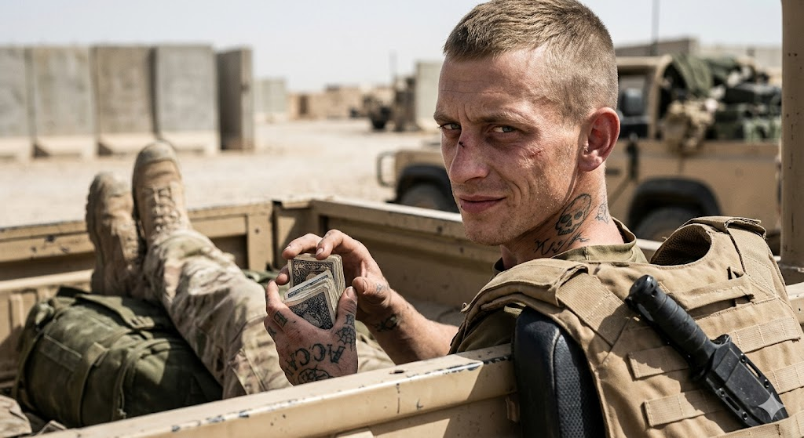
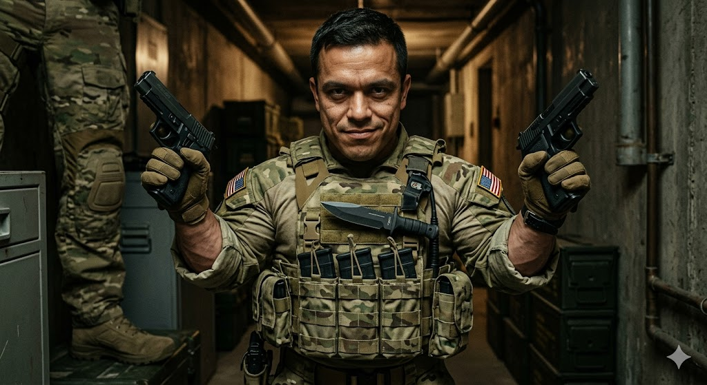

GURPS Special Forces
Last PlayedApril 18, 2026
In-Game DateSpring 2019
Story So Far
The C-130 touched down at the Voss Campus as the Arizona sun dipped below the horizon, the stasis chamber humming steadily in the cargo bay behind a team that had already grown accustomed to impossibility. Dr. Jones, the flight physician tasked with monitoring their prisoner's vitals, had been less than inspiring — Sammy and Ronnie noticed the white powder on his workstation long before Guy confirmed it was cocaine. But the prisoner stayed unconscious, the chamber stayed stable, and the flight…
Read full session recap →
Read full session recap →
The Team

Guy LeFleur
ActiveExplosives expert · FLQ-trained saboteur · One-eyed · Truthful to a fault · Pyromaniac tendencies · Overconfident · Extraordinarily lucky · Loyal to his unit · Hunted by Major Nash Miller

Jens Hartmann
ActiveDemolitions expert · Combat diver · Pragmatic problem-solver · Compulsive fixer · Quietly indispensable

Ronnie Vint
ActiveExceptional combatant · Petty criminal · Bully · Insubordinate · Resourceful

Sammy Castaneda
ActiveBorn Soldier · Savage reputation · Compact and deadly · Bloodthirsty · Callous · Dangerously curious · Weirdness Magnet · Dual-wielding pistoleer · Lecherous · Combat psychic